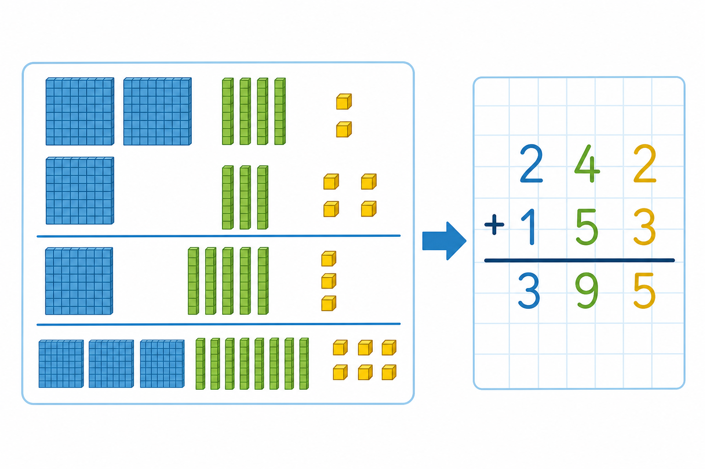

Co to jest? Що це?
Działanie pisemne to liczenie w słupku — cyfra pod cyfrą, od prawej do lewej.
Письмова дія — рахунок стовпчиком: цифра під цифрою, справа наліво.
Jak w szkole? Як у школі?
Ustaw liczby równo (jedności pod jednościami). Zaczynaj od prawej kolumny.
Став числа рівно (одиниці під одиницями). Починай з правого стовпця.
Przykład z życia Приклад з життя
Liczenie w słupku w zeszycie. Przykład: słupek + − × :.
Рахунок стовпчиком у зошиті. Приклад: słupek + − × :.
słupek + − × :